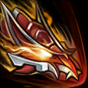

起手裝備
 長劍
長劍

三相、殞落、死亡之舞、自然之力、雅瑪蘭仍與最新打野相同；評級下調不代表這套鬥士核心失效。


五件成裝與鞋子分開列示；起手與核心是購買路線，不是額外佔用的成裝欄位。鞋子完成時機仍依對線壓力與回城金錢調整。


瞬疾步法、堅定壁壘、回春、過度生長、傳奇疾速與7.3b表相符，保留農野和持續施法定位。


閃現保留進場角度與撤退彈性，重擊維持打野必備。 本英雄以鬥士／農野成長／飛龍強化定位使用；7.3b不改重擊主動斬殺值，需看進化與充能。
加點優先：E > W > Q
維持E > W > Q，前三等改E/W/Q，以標記搭持續範圍火焰清營，再補雙擊；不是未滿100層就自帶龍型緩速。
擊殺大型野怪、史詩級野怪與英雄會獲得堆層，擊殺飛龍提供更多；每達 100 層會依序強化一項技能。

下一次普攻快速攻擊兩次並附帶命中效果；龍型態改為前方範圍攻擊，額外緩速需要龍裔之怒達100層的技能強化。
在周圍形成火焰並提高跑速，持續對附近敵人造成魔法傷害；普攻可延長效果。
發射火球造成傷害並標記目標，普攻標記目標會造成最大生命比例額外傷害；龍型態會在地面留下燃燒區域。
被動透過普攻累積怒氣；滿怒後躍向指定方向變成巨龍，造成傷害並將路徑上的敵人聚向落點。
龍裔堆層逐項強化技能，E 標記接 Q 雙擊清營，不預設未達層數的龍型緩速。龍型 Q 緩速加上100層前提，不把未解鎖強化當預設效果。
3技標記 → 2技加速 → 普攻 → 1技雙擊 → 持續普攻
先用三技掛上標記，再靠一技雙擊快速觸發最大生命比例傷害。
4技變身 → 龍型3技 → 2技貼身 → 龍型1技 → 普攻
大絕進場後先放三技建立燃燒區，再以二技黏住並用一技範圍雙擊。
3技標記 → 1技雙擊 → 普攻 → 重擊收尾
一技雙擊能快速觸發標記傷害，接近斬殺線時與重擊同步施放。
維持E > W > Q，前三等改E/W/Q，以標記搭持續範圍火焰清營，再補雙擊；不是未滿100層就自帶龍型緩速。 五級前以完整清野、疊加龍裔之怒與控河蟹為主，避免和強勢打野硬碰。三技標記野怪後持續普攻，搭配一技雙重打擊能快速觸發額外傷害。
三相之力 → 殞落王者之劍 → 死亡之舞為預設前段順序。龍裔堆層逐項強化技能，E 標記接 Q 雙擊清營，不預設未達層數的龍型緩速。後兩格依敵方實際威脅替換；先完成關鍵核心，再決定防裝與穿透，支援物件前確認重擊充能及隊友線權。
擁有多次技能強化後可擔任前排鬥士，但仍要避免脫離隊伍單獨衝入。優先圍繞飛龍與遠古物件作戰，利用高持續傷害快速處理前排。
以同頁打野威脅名單拉姆斯、艾克更新，有利名單僅是既有機制判斷，排除與威脅重複者；希瓦娜入侵仍看兩側線權、血量及關鍵技能，不當作固定單挑勝率。
對局名單是機制與分路判斷，不代表固定勝率；需同時看雙方熟練度、兵線與陣容。
移速疊起來後不要徒步硬追，控制留到能確實命中的位置。
替換以本頁五件成裝為基準；同一格建議擇一。二、三級鞋是一條升級線，換鞋時整條同步；魔劍進化不占新欄位。
高
觸發：敵方前排物防／魔防成形，或近身普攻威脅明顯。
雅瑪蘭守護像 → 黑色切割者
對手已堆物防且你能多次造成物理傷害時，以黑切持續削甲。
對手已堆物防且你能多次造成物理傷害時，以黑切持續削甲。
高
觸發：主要死亡原因是一輪集火，無法完成輸出或控制。
雅瑪蘭守護像 → 守護天使
物理爆發或進場容易先被集火時，末件改守護天使；復活期間仍需要隊友掩護。
物理爆發或進場容易先被集火時，末件改守護天使；復活期間仍需要隊友掩護。
高
觸發：敵方法術先手或持續魔法傷害成為主要威脅。
同一格有多個建議時擇一；核心成形後依實際威脅調整。
高
觸發：魔法傷害與控制鏈影響生存或輸出。
狂戰士護脛 → 水星之靴
魔法傷害及可被韌性縮短的控制占主導時，鞋線整條改水星之靴→鎖鏈軍靴。
魔法傷害及可被韌性縮短的控制占主導時，鞋線整條改水星之靴→鎖鏈軍靴。
韌性不能縮短所有控制，例如擊飛；護盾與解控各有適用條件。
高
觸發：敵人持續回復令集火失敗。
雅瑪蘭守護像 → 生化龐克鏈鋸之劍
需要穩定施加重創時改用鏈鋸；不要為重創破壞攻速或暴擊核心。
需要穩定施加重創時改用鏈鋸；不要為重創破壞攻速或暴擊核心。
7.3c差異核對：7.3c直接平衡項目屬符文大亂鬥；本頁保留已核對的峽谷配置。版本更新不等於每位英雄都必須更換Tier或裝備。查看整輪校正範圍。
本頁校正版本：7.3c；校正日期：2026-10-25。
參考來源標示版本：7.3c
本輪核對官方版本差異、道具/符文引用、五成裝與鞋線、逐級加點及情境替換一致性。Tier及玩法屬本站編輯判斷，不是官方排名或台服勝率；未公開的全級技能表不推算。
評級理由：7.3c 維持 C（本站判斷）。A調整為C：最新7.3b打野指南及Tier表均C；依賴發育與龍裔層數、早期主動抓人限制較多，舊A缺少當前支持。這是本站推薦順位，不是聲稱官方削弱或台服勝率。 7.3c 未改動此分路的英雄數值，沒有新證據只因版本號而升降。
Riot 官方資料 ↗ · Riot 官方資料 ↗ · Riot 官方資料 ↗ · Riot 官方資料 ↗ · Riot 官方資料 ↗ · WildRiftFire 參考攻略 ↗
7.3c 的直接英雄倍率改動屬符文大亂鬥；本召喚峽谷配置承接 7.3b。未把模式專屬增削轉為峽谷增削。
五件成裝、獨立鞋線、起手、核心、情境替換引用與一般符文列別均重新檢查；移除裝備不列入當前推薦。